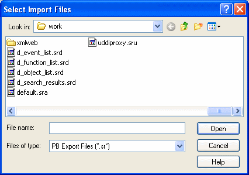

You can export object definitions to text files. The text files contain all the information that defines the objects. The files are virtually identical syntactically to the source forms that are stored in libraries for all objects.
You may want to export object definitions in the following situations:
Later you can import the files back into PowerBuilder for storage in a library.
 Caution The primary use of the Export feature is exporting source
code, modifying the source. You can use the Source editor to modify
the source code of an object directly, but modifying source in an
ASCII text file is not recommended for most users. See "Using the Source editor".
Caution The primary use of the Export feature is exporting source
code, modifying the source. You can use the Source editor to modify
the source code of an object directly, but modifying source in an
ASCII text file is not recommended for most users. See "Using the Source editor".
 To export entries to text files:
To export entries to text files:
Select the Library entries you want to export.
You can select multiple entries in the List view.
The Export Library Entry dialog box displays, showing the name of the first entry selected for export in the File Name box and the name of the current directory. The current directory is the target's directory or the last directory you selected for saving exported entries or saving a file using the file editor.
PowerBuilder appends the file extension .srx, where x represents the object type.
Specify the file name and directory for the export file. Do not change the file extension from the one that PowerBuilder appended.
Select the encoding for the exported file.
The HEXASCII export format is used for source-controlled files. Unicode strings are represented by hexadecimal/ASCII strings in the exported file, which has the letters HA at the beginning of the header to identify it as a file that might contain such strings. You cannot import HEXASCII files into a previous version of PowerBuilder.
Click OK.
PowerBuilder converts the entry to text, stores it with the specified name, then displays the next entry you selected for export.
If a file already exists with the same name, PowerBuilder displays a message asking whether you want to replace the file. If you say no, you can change the name of the file and then export it, skip the file, or cancel the export of the current file and any selected files that have not been exported.
Repeat steps 3 through 5 until you have processed all the selected entries.
If the Library painter is set to display files, you can see the saved files and double-click them to open them in the File editor.
 To import text files to library entries:
To import text files to library entries:
In the System Tree or Library painter, select the library into which you want to import an object.
Select Import from the pop-up menu, or, in the Library painter only, click the Import button on the PainterBar.
The Select Import Files dialog box displays, showing the current directory and a list of files with the extension .sr* in that directory. The current directory is the target's directory or the last directory you selected for saving exported entries or saving a file using the file editor.

Select the files you want to import. Use Shift+Click or Ctrl+Click to select multiple files.
Click Open.
PowerBuilder converts the specified text files to PowerBuilder format, regenerates (recompiles) the objects, stores the entries in the specified library, and updates the entries' timestamps.
If a library entry with the same name already exists, PowerBuilder replaces it with the imported entry.
 Caution When you import an entry with the same name as an existing
entry, the old entry is deleted before the import takes place. If
an import fails, the old object will already be deleted.
Caution When you import an entry with the same name as an existing
entry, the old entry is deleted before the import takes place. If
an import fails, the old object will already be deleted.